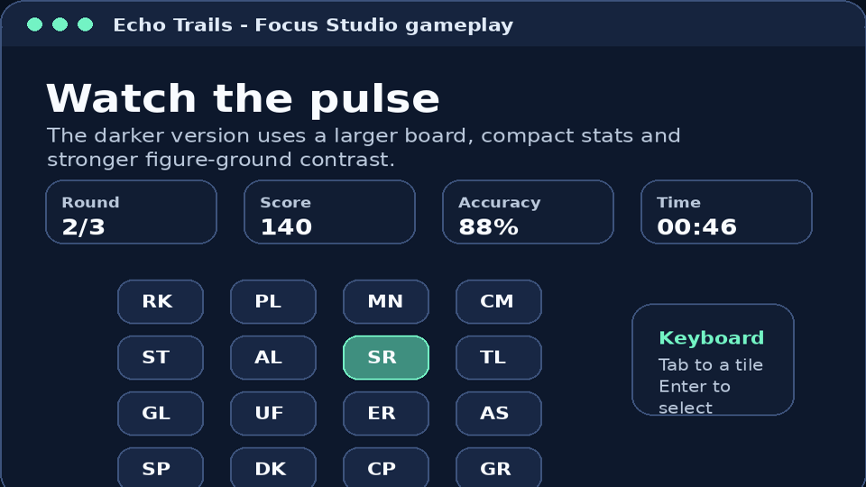

Game Type
Echo Trails is a sequence-memory and spatial-memory game. The player watches a short pattern and repeats it in the same order.
Design 2 - Memory Game
Echo Trails is a browser-based memory game where players watch a glowing trail of tiles and repeat the sequence from memory. The project focuses on spatial memory, attention and clear visual feedback.

Project Snapshot
The game is designed as a short interactive experience that users can start quickly. Players choose a difficulty level, select a visual theme and then test how accurately they can recall the tile sequence.
Echo Trails is a sequence-memory and spatial-memory game. The player watches a short pattern and repeats it in the same order.
Starter, Focus and Challenge levels change the grid size, sequence length and preview speed.
The player can choose from Animals, Nature and Space themes before starting the memory challenge.